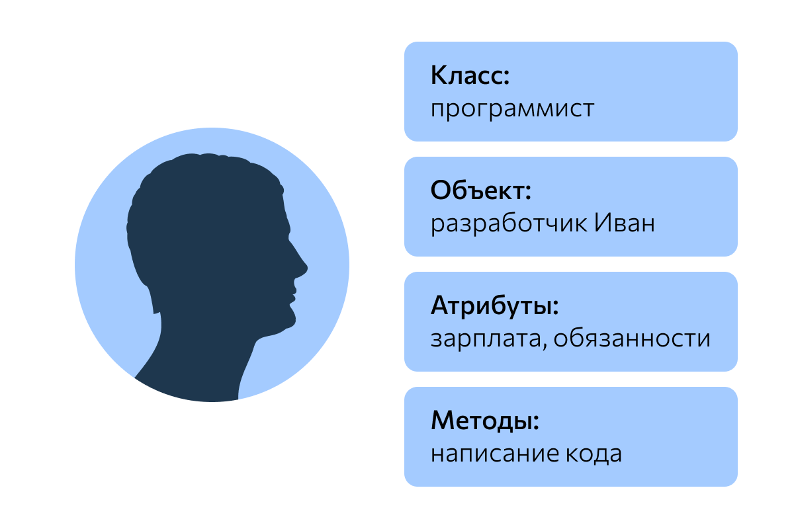

Объектно-ориентированное программирование основано на четырех основных принципах:
Абстракция: абстрактное поведение объектов обобщается в классах
Инкапсуляция данных: свойства и методы инкапсулируются в виде классов и скрыты от внешнего доступа.
Наследование: свойства и методы могут быть унаследованы одним классом от другого класса
Полиморфизм: множество форм - объекты могут принимать различные формы в зависимости от их использования
В объектно-ориентированном программировании класс представляет своего рода образец объектов, шаблон, на основе которого могут быть созданы отдельные экземпляры (объекты) во время выполнения программы. Внутри класса разработчик определяет свойства и методы, которыми должны обладать отдельные экземпляры объекта. Свойства представляют состояние экземпляров объекта, методы и их поведение.
Можно еще провести следующую аналогию. У нас у всех есть некоторое представление о человеке, у которого есть имя, возраст, какие-то другие характеристики. Совокупность подобных характеристик можно назвать шаблоном человека или классом. Конкретное воплощение этого шаблона может отличаться, например, одни люди имеют одно имя, другие - другое имя. И реально существующий человек (фактически экземпляр данного класса) будет представлять объект этого класса.

Подпись к ООП
Схема ООП
Существуют классические объектно-ориентированные языки как Java или C#. Также есть языки, который в той или иной мере применяют ООП, но чисто объектно-ориентированными языками не являются, как например, JavaScript.
Рассмотрим вкратце ООП на примере Java и JavaScript.
Абстракция
В объектно-ориентированном программировании основу или асбстракцию для объектов определяют классы. Классы содержат общее состояние и поведение объектов. Например, нам надо представить в программе человека. В большинстве языков программирования для определения классов применяется ключевое слово class. Так, в Java мы могли бы определить следующий класс Person, который представляет человека:
C# достаточно умён, чтоб разделить обычные параметры и массив параметров, даже если они одного типа.
Посмотрите на следующие два метода:private void DisplayOverload(int a, params string[][] parameterArray) { }private void DisplayOverload(int a, params string[,] parameterArray) { }Разница между ними в том, что первый запустится, и такая синтаксическая конструкция будет подразумевать, что в метод будет передаваться n массивов строк. Вторая же выдаст ошибку:Error: The parameter array must be a single dimensional arrayЗапомните: массив параметров должен быть одномерным.
Следует упомянуть, что последний аргумент не обязательно заполнять отдельными объектами, можно его использовать, будто это обычный аргумент, принимающий массив, то есть: